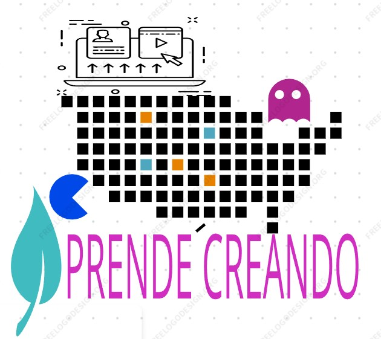

<!DOCTYPE html>
<html lang="en">
<head>
    <meta charset="UTF-8">
    <meta http-equiv="X-UA-Compatible" content="IE=edge">
    <meta name="YAMILETH PERDOMO RODRIGUEZ" content="width=device-width, initial-scale=1.0">
    <title>aprendiendo a crear paginas web</title>
</head>
<link href="https://cdn.jsdelivr.net/npm/bootstrap@5.2.0-beta1/dist/css/bootstrap.min.css" rel="stylesheet" integrity="sha384-0evHe/X+R7YkIZDRvuzKMRqM+OrBnVFBL6DOitfPri4tjfHxaWutUpFmBp4vmVor" crossorigin="anonymous">
<script src="https://cdn.jsdelivr.net/npm/bootstrap@5.2.0-beta1/dist/js/bootstrap.bundle.min.js" integrity="sha384-pprn3073KE6tl6bjs2QrFaJGz5/SUsLqktiwsUTF55Jfv3qYSDhgCecCxMW52nD2" crossorigin="anonymous"></script>
   
</body>
</html>
<html lang="en">
<head>
    <meta charset="UTF-8">
    <meta http-equiv="X-UA-Compatible" content="IE=edge">
    <meta name="viewport" content="width=device-width, initial-scale=1.0">
    <title>Document</title>
     <!-- <link rel="stylesheet" href="css/estilos.css">  -->
</head>
<body>
    <header>
        
      
        <h1>ESTUDIANDO HOJAS DE ESTILO EN CASCADA CSS Y FRAMEWOKS CSS</h1> 

     <nav class="navbar navbar-expand-lg navbar-light bg-light ">
        <div class="container-fluid">
          <a class="navbar-brand" href="evaluacion_1.html">inicio</a>
          <button class="navbar-toggler" type="button" data-bs-toggle="collapse" data-bs-target="#navbarSupportedContent" aria-controls="navbarSupportedContent" aria-expanded="false" aria-label="Toggle navigation">
            <span class="navbar-toggler-icon"></span>
          </button>
          <div class="collapse navbar-collapse" id="navbarSupportedContent">
            <ul class="navbar-nav me-auto mb-2 mb-lg-0">
              <li class="nav-item">
                <a class="nav-link active" aria-current="page" href="#/a>
              /li>
              <li class="nav-item">
                <a class="nav-link" href="#">Link</a>
              </li>
              <li class="nav-item dropdown">
                <a class="nav-link dropdown-toggle" href="#" id="navbarDropdown" role="button" data-bs-toggle="dropdown" aria-expanded="false">
                  recursos digitales
                </a>
                <ul class="dropdown-menu" aria-labelledby="navbarDropdown">
                  <li><a class="dropdown-item" href="evaluacion_1.html">evaluacion1</a></li>
                  <li><a class="dropdown-item" href="#"><recurso2"></evaluacion2></a></li>
                  <li><hr class="dropdown-divider"></li>
                  <li><a class="dropdown-item" href="#">Something else here</a></li>
                </ul>
              </li>
              <li class="nav-item">
                <a class="nav-link disabled">Disabled</a>
              </li>
            </ul>
            <form class="d-flex" role="search">
              <input class="form-control me-2" type="search" placeholder="Search" aria-label="Search">
              <button class="btn btn-outline-success" type="submit">Search</button>
            </form>
          </div>
        </div>
      </nav>
    </nav>
    <li class="nav-item dropdown">
        <a class="nav-link dropdown-toggle" href="#" id="navbarDropdown" role="button" data-bs-toggle="dropdown" aria-expanded="false">
          evaluacion
        </a>
        <ul class="dropdown-menu" aria-labelledby="navbarDropdown">
          <li><a class="dropdown-item" href="#"> <html></html>evaluacion1</a></li>
          <li><a class="dropdown-item" href="#"></evaluacion2> <html>evaluacion2</html></a></li>        
        </ul>
      </li>
      <li class="nav-item">

    <section>
      <div class="container">
        <div class="row align-items-start">
          <div class=" 8 col">
            <iframe width='100%'  height='600px'  scrolling='yes'  src='https:&#x2F;&#x2F;www.goconqr.com&#x2F;es-ES&#x2F;p&#x2F;36741651-hojas-de-estilo-en-cascada-css-quizzes?frame=true'  style='border: 1px solid #ccc'  allowfullscreen  webkitallowfullscreen  mozallowfullscreen  oallowfullscreen  msallowfullscreen></iframe><a href='https:&#x2F;&#x2F;www.goconqr.com&#x2F;es&#x2F;tests'>Test creado con GoConqr por yamileth perdomo</a>
            <iframe width='100%'  height='600px'  scrolling='yes'  src='https:&#x2F;&#x2F;www.goconqr.com&#x2F;es-ES&#x2F;p&#x2F;36746360-framework-css-quizzes?frame=true'  style='border: 1px solid #ccc'  allowfullscreen  webkitallowfullscreen  mozallowfullscreen  oallowfullscreen  msallowfullscreen></iframe><a href='https:&#x2F;&#x2F;www.goconqr.com&#x2F;es&#x2F;tests'>Test creado con GoConqr por yamileth perdomo</a>
          </div>
          <div class="4 col">
          <iframe src="https://www.facebook.com/plugins/page.php?href=https%3A%2F%2Ffacebook.com%2FUniversidadUNAD%2F&tabs=timeline&width=340&height=500&small_header=false&adapt_container_width=true&hide_cover=false&show_facepile=true&appId" width="340" height="500" style="border:none;overflow:hidden" scrolling="no" frameborder="0" allowfullscreen="true" allow="autoplay; clipboard-write; encrypted-media; picture-in-picture; web-share"></iframe></aside></iframe">
          
        
         article
        iframe src="PDF/tema1.PDF
         <article>
            <h4>Hojas de estilo en cascada  css  </h4>
    <p>
            se les denomina asi porque : 
            las propiedades de estilo pueden estar escritas en varios sitios (en varios lugares 
            de la pagina web o de estilo)  dependiendo el sitio, afectan a mas o menos elementos.
            Cuando un elemento esta contenido en otro por (ejemplo un parrafo <p> dentro deuna .
                
                CSS es un estándar diseñado principalmente para separar los atributos presentaciones (como el color de fondo,
                 el tamaño de la fuente o la sangría)
                 del contenido. Aunque éste puede trabajar con muchos tipos de documentos, es mayormente utilizado como una 
                 forma de proveer información presentacionales en páginas web.
                 https://www.htmlquick.com/es/tutorials/css.html#concept

               
     <h4> frameworks css</h4>
    <p>
            El Framework Web dispone de las siguientes
            funcionalidades: Proceso de autenticación,
            administración de roles y de usuarios, creación y
            administración de formularios, generación de formularios
            a partir de tablas, manejo de listas de valores y gestión de
            registros.
            Un framework agrega funcionalidad extendida a un lenguaje de programación, automatiza muchos de los patrones de
             programación para orientarlos a un determinado propósito, proporcionando una estructura al código, mejorándolo y haciéndolo más entendible y sostenible, y permite separar en capas la aplicación. En general, divide la aplicación en tres capas: 
            • La lógica de presentación que administra las interacciones entre el usuario y el software. 
            • La Lógica de datos que permite el acceso a un agente de almacenamiento persistente u otros
            • La lógica de dominio o de negocio, que manipula los modelos de datos de acuerdo a los comandos recibidos desde la presentación.
            Los Web Framework [3] pretenden facilitar el desarrollo de Aplicaciones web (Sitios web, intranets, etc.). Actualmente, PHP es conocido por su simplicidad y es ampliamente usado en este campo del desarrollo de software web. También es común el uso de otros lenguajes “de scripting” o interpretados como Perl, Asp ó
             JSP que permiten mayor facilidad de uso y flexibilidad en el rápido desarrollo de aplicaciones, pero al mismo tiempo tienden a producir código de difícil sostenimiento y poco eficiente. En este ámbito, los patrones de diseño más utilizados son aquellos que se centran en separar la presentación (páginas HTML, CSS) de la lógica o backend.
            diseño y creación de una estructura Framework bien definida, reusable, en la que sus componentes faciliten la creación de aplicaciones web,
            .(htt3)
            algunoas  frameworks de HTML?
            Framework gratuitos para HTML/CSS
            Startup Framework. ...
            Framework Responsive Email by Ted Goas. ...
            Framework CSS Modal. ...
            Responsive Multi-Column Form. ...
            Framework Brick. ...
            
           
        </article>
       
    </section>
    <footer>
        correo: thelemay1029@hotmail.com
        skype : thelemay1029
        fecha actualización : 15 04 2022
        

    </footer>

</body>
</html><var></var>